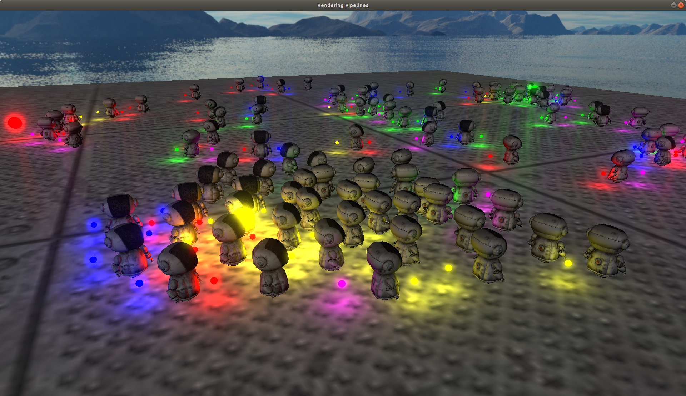
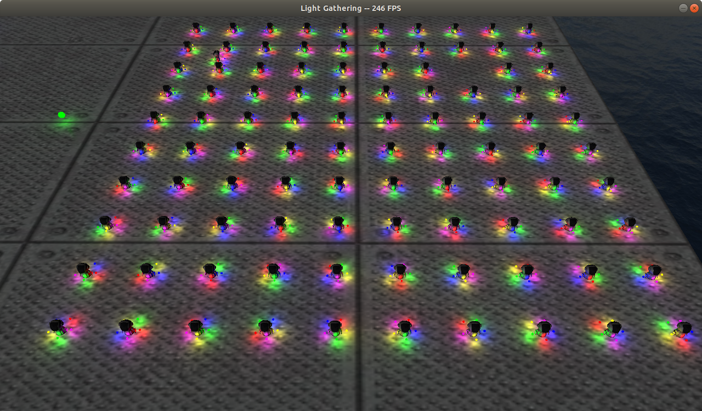
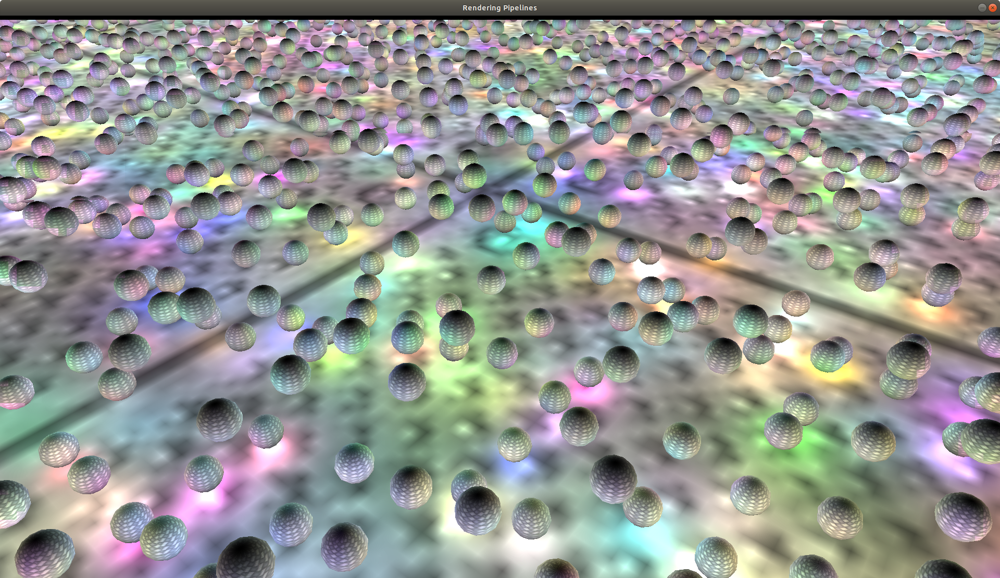

Progression
Update as of August 9th 2019
In July I deleted the whole engine and am redoing it. I didn't like the design I was using, and have learned a lot about game engines while interning at Activision. I am redoing this engine while encorporating things I have learned from this internship and in general. I hope to be back to what I had (although a lot cleaner and better) by October 2019.
Description
Progression is a game engine I have been working on mostly since Fall of 2018. It is a 3D game engine written in C++ for both Linux and Windows. I'm mostly building it because I think game engines are super cool and want to learn what goes into them. What better way to learn that to build one myself? It has a lot of features that are listed below, but some of the biggest problems I have spent time on are: engine design, rendering pipelines, and resource optimization. A lot of my time on this has been thinking on how such a large project should be designed, and debating the trade offs between speed and ease of use/implementation. I've also spend quite a bit of time exploring the differences between forward rendering, deferred rendering, deferred with light volumes, and tiled-deferred rendering. Finally, i've tried to optimize resource loading, and create a manager that makes it easy to access resources without duplication, and loading models from a serialize binary format. I hope to keep adding to this engine as time goes on.
Motivation
For a long time I thought I wanted to make video games. After I took a few graphics courses though, I started to realize that what I was more passionate about was the technology that goes into games, not creating the games themselves. Every year games do more and look better, while still keeping real time frame rates. I thought that this was really interesting, and wanted to learn how it happens myself. Since I already really liked C++, I thought the best way for me to learn how would be to make a game engine. I don't have a game in mind while creating this, but I am putting a lot of time into thinking about how it should be designed to help make games. While it's something I only have time to work on in small pieces, I hope to keep extending it and using it to learn new things about graphics, game engines, and C++.
Code
Code from this project can be found in this GitHub repo
Features
- 3D rendering of models with Blinn-Phong shading
- Dynamic shadows for point, spot, and directional lights
- Configurable rendering pipeline: can toggle between forward and tiled-deferred rendering
- Bloom
- A basic entity-component architecture
- Resource management of: models, textures, materials, shaders, and skyboxes
- Input handler
- Scene loading from text files
- Basic positional audio through OpenAL
- Custom model format for optimized load times
- OBJ loading
- Directional and point lights supported
- Skybox support
- Image loading and texturing for: jpeg, png, bmp, tga
- Logging system
- Single window management
Tools Used
- OpenGL
- OpenAL
- GLFW
- Stbimage
- Tinyobjloader
- GLAD
- GLM
- cpptoml
Images:
Closeup of one of the robots during a demo scene.

Robots collecting each of the five lights. Robots plan path using TTC algorithm.

End of the robot collecting lights demo.

First implementation of dynamic point shadows.

Several thousand lights bouncing lights while staying over 30 FPS with the tile deferred renderer.